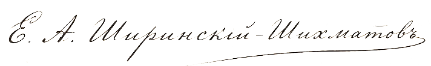

Господину N‑скому Уездному Исправнику,
полковнику Свербееву.
Милостивый государь!
Получен рапорт Ваш о появлении в уезде существ, якобы прибывших с иных планет.
Губернское Правление находит изложенные сведения совершенно невероятными и полагает, что причиной означенных
слухов служат либо обман, либо суеверие, либо недостаточная проверка обстоятельств дела.
Предписывается прекратить распространение подобных известий и обратить внимание на установление истинной
личности упомянутых лиц. В случае их обнаружения надлежит выяснить, не являются ли они бродягами, иностранцами,
беглыми либо иными подозрительными людьми.
Впредь прошу не затруднять Губернское Правление донесениями о небесных жителях без представления
доказательств, способных убедить уездную полицию не только в описываемых фактах, но и в здравости рассудка
писавшего.
В заключение предлагается Вам обратить особое внимание на состояние порядка во вверенном уезде, урожай
текущего года, исправность дорог, сбор податей и исполнение рекрутских повинностей, как на предметы,
несравненно более близкие к кругу Ваших обязанностей.
По поручению Господина Губернатора,
Правитель Канцелярии,

Господину N‑скому Уездному Исправнику,
полковнику Свербееву.
Милостивый государь!
Получен рапорт Ваш о событиях в уезде, якобы противных естественному ходу вещей и Своду Законов Российской
Империи.
Губернское Правление находит изложенные сведения совершенно невероятными и полагает, что причиной означенных
слухов служат либо обман, либо суеверие, либо недостаточная проверка обстоятельств дела.
Предписывается прекратить распространение подобных известий и обратить внимание на установление
личности лиц, стоящих за вышеупомянутыми событиями, ежели они действительно имели место быть. В случае их
обнаружения надлежит выяснить, не являются ли они бродягами, иностранцами,
беглыми либо иными подозрительными людьми.
Впредь прошу не затруднять Губернское Правление донесениями о небылицах без представления
доказательств, способных убедить уездную полицию не только в описываемых фактах, но и в здравости рассудка
писавшего.
В заключение предлагается Вам обратить особое внимание на состояние порядка во вверенном уезде, урожай
текущего года, исправность дорог, сбор податей и исполнение рекрутских повинностей, как на предметы,
несравненно более близкие к кругу Ваших обязанностей.
По поручению Господина Губернатора,
Правитель Канцелярии,
Господину N‑скому Уездному Исправнику,
полковнику Свербееву.
Из Тайной Канцелярии Его Императорского Величества получено отношение по поводу донесения Вашего, минувшего
губернское начальство и отправленного прямо в столицу. Правитель оной Канцелярии, не находя в донесении сём
ничего, кроме нелепых измышлений о небывальщине, испрашивает: не находится ли N‑ский уездный
исправник в помешательстве умственных способностей, и не надлежит ли озаботиться его освидетельствованием.
Губернское Правление находит подобный запрос из высшего учреждения Империи оскорбительным для всей губернской
службы и в высшей степени постыдным лично для Вас.
Строжайше подтверждается: всякое донесение в высшие инстанции, минуя губернское начальство, есть грубое
нарушение порядка подчинённости и своевольство, не сообразное ни чину, ни званию Вашему.
Впредь воспрещается Вам сноситься с Тайной Канцелярией, Третьим Отделением или иными высшими учреждениями
иначе, как через губернское начальство и с его предварительного ведома.
Извольте представить объяснение по сему делу в трёхдневный срок, не упуская из виду, что дальнейшее подобное
своевольство побудит губернское начальство ходатайствовать о временном отстранении Вашем от должности, впредь
до выяснения состояния Вашего рассудка.
Гражданский Губернатор,
Тайный советник